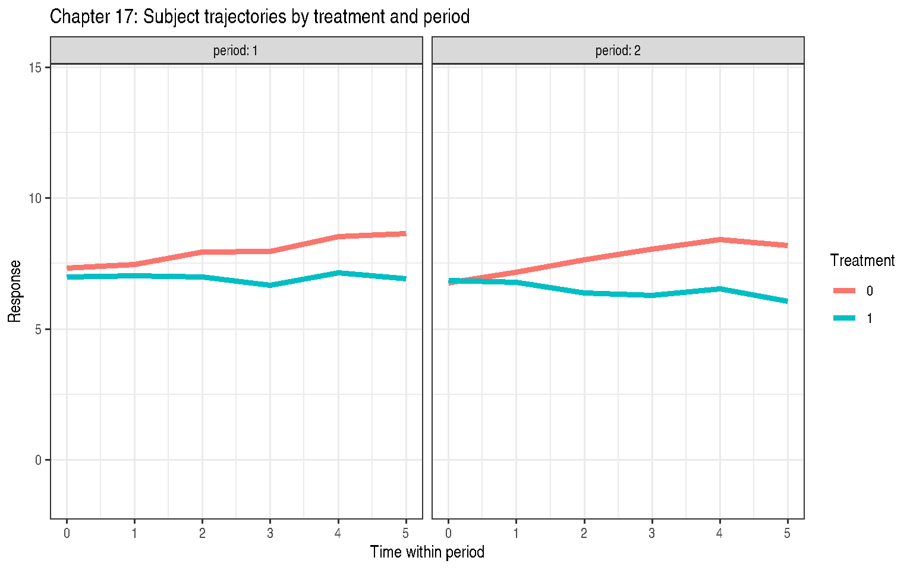
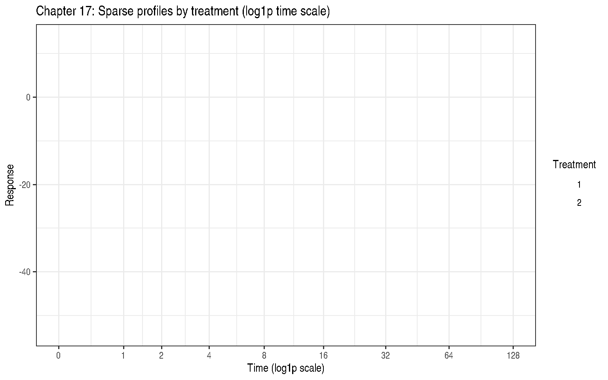

Chapter 17: Correlated Errors, Part I: Repeated Measures
Covariance Structures for Correlated Observations
2026-05-17
Source:vignettes/chapter-17-repeated-measures.qmd
1 Overview
Chapter 17 addresses repeated measures designs where the same subject is observed multiple times. Key challenges:
- Observations on the same subject are correlated
- The correlation structure needs to be specified or estimated
- Standard ANOVA assuming independence is incorrect
1.1 Common Covariance Structures
| Name | Symbol | Description |
|---|---|---|
| Compound Symmetric | CS | Equal correlation \(\rho\) between all pairs |
| AR(1) | AR1 | Correlation \(\rho^{\|t-t'\|}\) decays with lag |
| ARH(1) | ARH1 | AR(1) with heterogeneous variances per time |
| SP(POW) | SPPOW | Power model for unequally-spaced times |
2 Example 17.1 — Crossover with ARH(1) (Section 17.3.1)
DataSet17.1: 41 subjects, 2-treatment crossover design, 6 equally-spaced time points per period (2 periods), plus a baseline covariate. 492 observations total.
'data.frame': 492 obs. of 7 variables:
$ id : Factor w/ 41 levels "1","2","3","4",..: 1 1 1 1 1 1 1 1 1 1 ...
$ sequence: Factor w/ 2 levels "01","10": 1 1 1 1 1 1 1 1 1 1 ...
$ period : Factor w/ 2 levels "1","2": 1 1 1 1 1 1 2 2 2 2 ...
$ trt : Factor w/ 2 levels "0","1": 1 1 1 1 1 1 2 2 2 2 ...
$ t : int 0 1 2 3 4 5 0 1 2 3 ...
$ baseline: num 2.5 2.5 2.5 2.5 2.5 ...
$ y : num 6.83 4.74 6.1 7.01 7.26 ...Code
cat("Subjects per sequence:\n")Subjects per sequence:
01 10
17 24 Code
ggplot(DataSet17.1,
aes(x = t, y = y, group = id, colour = trt)) +
geom_line(alpha = 0.4) +
stat_summary(aes(group = trt), fun = mean, geom = "line",
linewidth = 1.5) +
facet_wrap(~ period, labeller = label_both) +
labs(title = "Chapter 17: Subject trajectories by treatment and period",
x = "Time within period", y = "Response",
colour = "Treatment") +
theme_bw()
2.1 Covariance model comparison: CS, AR(1), ARH(1)
Code
## CS: compound symmetry via random subject intercept
fit_cs <- nlme::lme(
fixed = y ~ period + trt / t + baseline,
random = ~ 1 | id,
data = DataSet17.1,
method = "REML"
)
## AR(1)
fit_ar1 <- nlme::lme(
fixed = y ~ period + trt / t + baseline,
random = list(id = nlme::pdDiag(~ t)),
correlation = nlme::corAR1(form = ~ t | id / period),
data = DataSet17.1,
method = "REML"
)
## ARH(1): heterogeneous variances per time + AR(1)
fit_arh1 <- nlme::lme(
fixed = y ~ period + trt / t + baseline,
random = list(id = nlme::pdDiag(~ t)),
correlation = nlme::corAR1(form = ~ t | id / period),
weights = nlme::varIdent(form = ~ 1 | t),
data = DataSet17.1,
method = "REML"
)
stats::AIC(fit_cs, fit_ar1, fit_arh1)| df | AIC | |
|---|---|---|
| fit_cs | 8 | 1788.320 |
| fit_ar1 | 10 | 1604.486 |
| fit_arh1 | 15 | 1610.620 |
2.2 Treatment contrasts (equal intercepts, equal slopes)
Code
contrast estimate SE df t.ratio p.value
trt0 - trt1 0.229 0.217 447 1.051 0.2936
Results are averaged over the levels of: period
Degrees-of-freedom method: containment Code
contrast estimate SE df t.ratio p.value
trt0 - trt1 0.351 0.0626 447 5.616 <0.0001
Results are averaged over the levels of: period
Degrees-of-freedom method: containment 3 Example 17.2 — Sparse Longitudinal with SP(POW) (Section 17.3.2)
DataSet17.2: 41 subjects (17 on trt=1, 24 on trt=2) observed at up to 9 unequally-spaced times (0, 1, 2, 4, 8, 16, 32, 64, 128). Only 101 of 369 possible observations are present (sparse).
'data.frame': 101 obs. of 4 variables:
$ subject: Factor w/ 41 levels "1","2","3","4",..: 1 1 2 2 2 3 3 3 3 4 ...
$ trt : Factor w/ 2 levels "1","2": 1 1 1 1 1 1 1 1 1 1 ...
$ time : num 32 128 2 4 128 0 4 8 16 0 ...
$ y : num -0.123 -19.122 6.697 8.426 -36.56 ...Code
cat("Observations per treatment:\n")Observations per treatment:
1 2
48 53 Unique times: 0 1 2 4 8 16 32 64 128 Code
ggplot(DataSet17.2,
aes(x = time, y = y, group = subject, colour = trt)) +
geom_line(alpha = 0.4) +
scale_x_continuous(trans = "log1p",
breaks = c(0, 1, 2, 4, 8, 16, 32, 64, 128)) +
labs(title = "Chapter 17: Sparse profiles by treatment (log1p time scale)",
x = "Time (log1p scale)", y = "Response",
colour = "Treatment") +
theme_bw()
3.1 SP(POW) model: spatial-power covariance for unequal times
Code
## SP(POW) approximated via corExp (exponential = continuous AR(1))
fit_sppow <- nlme::lme(
fixed = y ~ trt + time + trt:time,
random = ~ 1 + time | subject,
correlation = nlme::corExp(form = ~ time | subject, nugget = FALSE),
data = DataSet17.2,
method = "REML",
control = nlme::lmeControl(opt = "optim", maxIter = 200)
)
summary(fit_sppow)Linear mixed-effects model fit by REML
Data: DataSet17.2
AIC BIC logLik
526.4956 549.668 -254.2478
Random effects:
Formula: ~1 + time | subject
Structure: General positive-definite, Log-Cholesky parametrization
StdDev Corr
(Intercept) 2.3129212 (Intr)
time 0.1190164 -0.467
Residual 1.3392364
Correlation Structure: Exponential spatial correlation
Formula: ~time | subject
Parameter estimate(s):
range
0.1284258
Fixed effects: y ~ trt + time + trt:time
Value Std.Error DF t-value p-value
(Intercept) 8.084794 0.6230263 58 12.976649 0.0000
trt2 -0.072656 0.8513536 39 -0.085342 0.9324
time -0.331930 0.0357610 58 -9.281910 0.0000
trt2:time 0.053389 0.0471164 58 1.133127 0.2618
Correlation:
(Intr) trt2 time
trt2 -0.732
time -0.459 0.336
trt2:time 0.349 -0.491 -0.759
Standardized Within-Group Residuals:
Min Q1 Med Q3 Max
-1.86393033 -0.33928173 -0.01363081 0.35505940 2.11251302
Number of Observations: 101
Number of Groups: 41 Code
trt emmean SE df lower.CL upper.CL
1 2.44 0.640 40 1.15 3.74
2 3.28 0.536 39 2.19 4.36
Results are averaged over the levels of: time
Degrees-of-freedom method: containment
Confidence level used: 0.95 4 Key Takeaways
- Repeated measures require a covariance model; CS is often adequate but ARH(1) better represents decaying and heterogeneous correlation.
- SP(POW) generalises AR(1) to unequally-spaced and incomplete time grids.
- Use
AICto select among covariance structures (fit with REML for final model, ML for covariance comparison if needed). -
nlmeoffers greater flexibility for covariance structures thanlme4.
5 References
Stroup, W. W., Ptukhina, M., and Garai, S. (2024). Generalized Linear Mixed Models: Modern Concepts, Methods and Applications (2nd ed.). CRC Press.
Verbeke, G., & Molenberghs, G. (2000). Linear Mixed Models for Longitudinal Data. Springer.